Ideja
Moonstack je 4X strategija za pregledač i telefon, iz porodice OGame i Travian: gradiš, istražuješ, praviš vojsku, napadaš, špijuniraš, praviš koalicije i trguješ. Razlika je u tome što je tvoj grad jedna kula, nacrtana u vertikalnom preseku, sprat po sprat. Mesec se tokom sezone spušta, a kule koje ga dodirnu poslednje noći „slete na Mesec“.
Visina je tvoj rang, tvoj pogled na mapu, tvoj prinos mesečeve prašine i tvoj rizik. Rekordna visina (ATH) ostaje kao trajni trofej.
Šta gradiš i na kojoj visini: bašte trpe vetar gore, mreže za prašinu ne rade dole. Svaki sprat je skuplji od prethodnog i nosi teret.
Temelj određuje bezbednu visinu. Preko nje rasteš na skelama (Leverage), uz Margin Call i Liquidation.
Skybridges spajaju kule u Megaspire: dele teret, branioce i Airdrop-ove. Most može da se preseče, i tada pada cela grupa.
Sezona traje 3 lunarna ciklusa. Faze su pravi Mesec na nebu: kad je pun mesec napolju, pun je i u igri.
Leverage, Liquidation, Floor price, Gas fee, Rug Pull, Diamond Hands, Airdrop, ATH, Wen Moon. Sve se dešava doslovno.
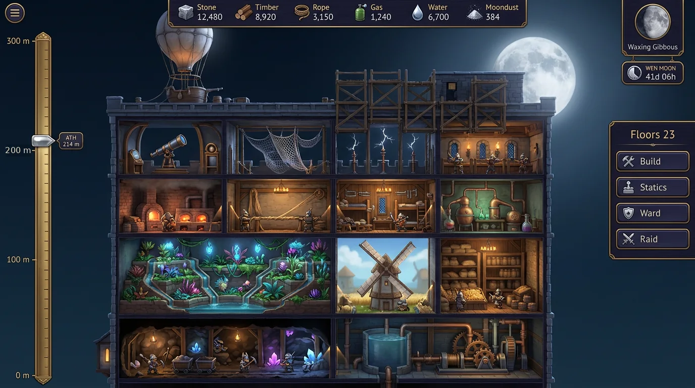
Zašto ovo još ne postoji
Igre u ovom žanru gradnju prikazuju na ravnoj mapi ili u polju zgrada. Fallout Shelter je pokazao koliko je presek zgrade čitljiv i drag na telefonu, ali nema rata ni ekonomije. Moonstack spaja te dve stvari: presek kao glavni ekran i ekonomiju sa ratom 4X igre.
Drugo, rast ovde ima fiziku. Igrači poznaju napetost Jenga-e: svaki novi sprat te podiže, a celu kulu čini krhkijom. U Moonstack-u to nije ukras, nego jezgro: finansijski rizik postaje statički rizik. Leverage su skele, Margin Call je škripanje grede, Liquidation je rušenje.
Treće, veliki se vide bukvalno. Visoka kula baca senku na komšijske vrtove i uzima im sunce. Mali dobijaju i razlog i alat da je sruše: sappere ispod temelja, makaze za mostove i ogledala.
Svet: „Kad je Mesec sišao“
Mesec se svake godine spušta niže, a sa njega pada mesečeva prašina koja leči, osvetljava i vredi više od zlata. Stvorenja iz legendi o Mesecu, moljci, žabe, zečevi, ždralovi, sove, vukovi i nebeski psi, grade kule od kamena, drveta i užadi da je uhvate pre drugih. Oklopi su od kože i mesinga, a radna odeća je umrljana malterom. Ništa futurističko: kamen, drvo, užad, mesing, platneni baloni i zmajevi od papira.
Postoji besplatan ulaz bez NFT-a, Free Climber: jedan unajmljeni zidar, sopstvena rang lista, kozmetički trofeji, ali bez novčanih nagrada. Igra je prvo za telefon. Sesija traje 5 do 10 minuta: GM provera u zoru, jedan sprat u red, pogled na statiku, jedan napad ili pohod skupljača. Obaveštenja stižu za Margin Call, napade, Tower Fall u kraju i pun mesec.
Istraživanje: od koga učimo
Pre dizajna sam prošao kroz igre koje su okupile velike zajednice, fizičke igre rušenja i web3 igre koje su uspele ili propale. Za svaku igru beležim šta joj radi, šta uzimamo i šta izbegavamo. Brojke navodim samo uz izvor.
| Igra | U čemu je jaka | Šta uzimamo | Šta izbegavamo |
|---|---|---|---|
| OGame, Travian | Igra teče i dok nisi tu. Flote, pljačka, savezi, svetovi sa početkom i krajem. | Osnovna petlja, sezone, polje ruševina posle bitke (kod nas Tower Fall) | Buđenje u 4 ujutru da spasiš vojsku; zato imamo Stop-Loss i Diamond Hands |
| Clash of Clans | Kratke sesije, raspored odbrane, snimak napada | Sesije od 5 minuta, replay bitke, odbrana koju slažeš sprat po sprat | Plaćeno preskakanje svega |
| Rise of Kingdoms | Savezi, sezonski ratovi, jasni ciljevi za grupu | Megaspire kao cilj koalicije, sezonski finale za sve u isto vreme | Kit koji kupi snagu i pobedi bez rizika |
| Fallout Shelter | Presek zgrade kao glavni ekran, ritam sesija bez prisilnog izlaska | Kula kao kuća za lutke, sobe se spajaju, sve se čita na jedan pogled | Nedostatak razloga za povratak kad maksimizuješ bazu; kod nas Moonline stalno pomera cilj |
| Jenga, Catch the Moon | Napetost rasta: svaki potez podiže i ugrožava celu kulu, a pad svi vide | Statika, Margin Call kao škripanje, Liquidation kao javni događaj | Čistu slučajnost; kod nas je rizik izračunljiv i vidljiv |
| Tower of Babel PvP (s&box) | Gradiš sopstvene stepenice; kula je istovremeno put i meta | Visina kao cilj i kao meta; protivnici ruše ono što si sagradio | Kratke runde bez dugog napretka |
| EVE Online | Ekonomija igrača i pad velikih kao vest za ceo svet | Lančani pad saveza (most se preseče, pa padnu i saveznici sa skelama) | Visok prag ulaska |
| Rust | Strah od racije i propadanja baze | Održavanje visine košta; visina bez odbrane je poziv na napad | Potpuno brisanje koje tera igrače da odustanu; zato postoje HODL Vault i Stop-Loss |
| Animal Crossing, Pokémon GO | Igra vezana za pravi sat i pravi svet | Pravi Mesec kao kalendar: faze u igri su faze na nebu | — |
| Axie Infinity | Pokazala je koliko ljudi privlači igra sa vlasništvom | Vlasništvo nad kulom i titulom | Ekonomiju koja zavisi od novih igrača i štampanja tokena. Pad aktivnih igrača od oko 90% od vrhunca. |
| Off the Grid, Pixels | Igre koje su preživele krah GameFi-ja | Igra prvo, lanac posle; kvalitet kao kod klasičnih igara | Lansiranje tokena pre nego što se dokaže zadržavanje igrača |
| Dark Forest | Magla rata na lancu: otkrivanje je igra | Skyline: niske kule se ne vide; mladi mesec krije napade | — |
Igre koje su ostale žive (Off the Grid, Pixels, deo Axie zajednice) imaju zajedničko: igra je proizvod, a lanac služi vlasništvu i trgovini. Zadržavanje igrača je važnije od pridobijanja novih. Moonstack zato nema sopstveni token na startu. Resursi se menjaju u bazenima na Moon Bazaar-u, a mi zarađujemo od malog fiksnog ETH fee-a, ne od inflacije.
Prema analizama industrije, preko 90% GameFi projekata je praktično mrtvo, a ulaganja su pala sa oko 4 milijarde dolara (2022) na oko 360 miliona (2025). Glavni uzroci su ekonomija kojoj trebaju stalno novi kupci, igra kao izgovor za token i obećana zarada. Mi nikad ne obećavamo zaradu. Nagrade su takmičarske i dolaze iz udela prihoda, a ne iz štampanja.
Ime: Moonstack
Nisam našao veću igru pod imenom „Moonstack“. Postoji mala narativna igra „Moon Stack“ na itch.io, napravljena za game jam, i dečja društvena igra „Catch the Moon“ sa merdevinama do Meseca. Nijedna nije ozbiljan sukob. Preporuka: zadržati ime, a pre lansiranja proveriti žig (USPTO i EUIPO, klase 9, 28 i 41) i zauzeti domen i nalog na mrežama.
Izvori
- Tower of Babel PvP, s&box
- Moon Stack, itch.io (provera imena)
- Catch the Moon, Casual Game Revolution
- Deconstructing Fallout Shelter, Mobile Free to Play
- Four years on: Bethesda on Fallout Shelter, PocketGamer.biz
- Fallout Shelter, Wikipedia
- OGame i Travian, Wikipedia
- Jenga, Wikipedia
- Why 93% of Web3 games failed, Bitmedia
- What the crash of a play-to-earn game reveals, TechXplore (Axie)
- Why Web3 gaming struggled to keep players, games.gg
- Robinhood Chain mainnet, FinTech Global
- Robinhood Chain primer, FalconX
- Tiangou, Moon rabbit, Chan Chu, Wikipedia
- Supermoon i Lunar month, Wikipedia
Svet i Mesec
Svet je ravnica podeljena na regije, regije na krajeve (ward), a krajevi na parcele. Svaki kraj ima 25 parcela u mreži 5 × 5, a na svakoj parceli stoji jedna kula. Adresa izgleda ovako: Saltmarsh · Ward 7 · C3.
| Regija | Tlo | Bonus | Mana | Za koga |
|---|---|---|---|---|
| Marsh | Mekano, močvarni gas | Gas Still +30%, šanac besplatno puni vodom | Temelj nosi 10% manje | Toad, Moth, vazdušni napadači |
| Quarry | Stena | Stone +30%, temelj nosi 15% više | Vrtovi −20% | Visoke kule, Hare |
| Forest | Šuma i korenje | Timber +30%, sapperi kopaju sporije kroz korenje | Više munja (visoka stabla privlače oluje) | Crane, Owl |
| Saltflats | Tvrda so, ravno | Najduže senke, najbolji pogled; Skyline vidi dalje | Water −25% | Wolf, Moon-Eater, lovci |
Pravi Mesec je kalendar
Mesec u igri prati pravi Mesec. Kad je napolju pun mesec, u igri hara oluja mesečeve prašine. Kad je napolju mlad mesec, u igri počinju skriveni napadi. Igrač može da pogleda u nebo i zna šta ga čeka. To je besplatan marketing svake noći i ritam koji niko ne mora da pamti.
Sezona traje tačno tri lunarna ciklusa, od punog meseca do četvrtog punog meseca, odnosno 88,6 dana. Poslednja noć je Perigee Night. Kad god je moguće, sezone poravnavamo tako da finale padne na pravi supermesec.
Moonline: Mesec se spušta
Svaki dan Mesec je niži. Moonline je visina na kojoj kula „dodiruje“ Mesec. Počinje na 1.200 m prvog dana i spušta se do 320 m na Perigee Night:
Moonline(d) = 320 + 880 × (1 − d / 88,6)1,6 m
Na početku niko ne može da dotakne Mesec. Pred kraj ga dotiču najviše kule, i zato su tada najveće mete.
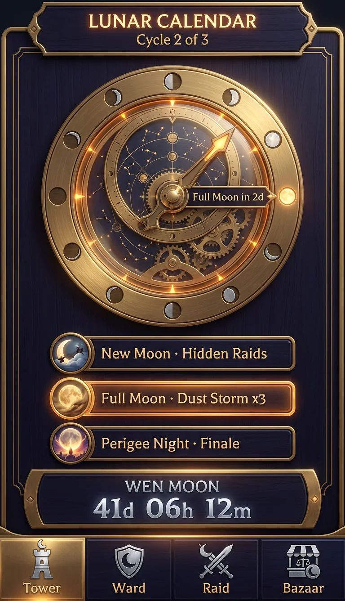
| Faza (dan ciklusa) | Događaj | Šta se menja |
|---|---|---|
| Pun mesec (0–1) | Dust Storm, Pack Howl | Mreže hvataju prašinu ×3. Wolf zavija: +15% morala saveznicima. Oluje i munje su dvostruko češće. |
| Opadanje (2–13) | Trgovački dani | Bazaar pool fee −30%. Popravke su jeftinije. |
| Mlad mesec (14–16) | Hidden Raids | Dolazeći napadi se vide tek 10 minuta pre udara. Owl ih vidi odmah. Moth dobija +25% plena. Mreže ne hvataju ništa. |
| Rast (17–28) | Rising Moon | Gradnja spratova je 10% brža. Skele se postavljaju 20% brže. |
| Perigee Night (poslednja 24 h) | Supermesec i finale | Svi krajevi su otvoreni za napad, a gas fee je upola manji. U ponoć se pravi snimak: kule čiji je krov iznad Moonline-a slete na Mesec. |
Interaktivni mockup 3 · Wen Moon
Faza i odbrojavanje se računaju uživo iz pravog sinodičkog meseca (29,53 dana). Demo sezone počinju punim mesecom 3. januara 2026. i traju po tri ciklusa.
Titule po broju NFT-ova
Svaki Moonstack NFT je jedan Mason, zidar koji živi u tvojoj kuli. Broj NFT-ova određuje titulu. Titule su stvorenja iz legendi o Mesecu. Svaka ima prednosti, slabost i vidljivost: što je titula veća, to te dalje vide na Skyline-u.
Male titule dobijaju alate protiv velikih: noć, sappere, mostove, ogledala i koalicioni bonus. Velike dobijaju moć, ali i vidljivost, skuplje održavanje vojske i munje. Kad padnu, njihova kula pada po komšijama kao Tower Fall i hrani sve oko sebe. Prednosti titula menjaju način igre, a ne samo brojeve.
Kula i ekonomija
Kula ima pet zona. Zgrada radi samo u svojoj zoni, a zona zavisi od visine. Zato je red spratova strategija: ako kasnije poželiš dodatnu baštu, ona mora iznad ciglane, gde je vetar.
| Zona | Visina | Zgrade | Pravilo |
|---|---|---|---|
| Temelj | ispod 0 m | Mine, Cistern, Pump, Moat | Nivo temelja određuje bezbednu visinu. Sapperi napadaju ovde. |
| Donji spratovi | 0–60 m | Hanging Gardens, Mill, Granary, HODL Vault | Bašte trpe senku komšija. Granary iznad Mill-a: +10%. |
| Srednji spratovi | 60–140 m | Brick Kiln, Rope Walk, Barracks, Gas Still, Workshop | Gas Still pored Brick Kiln-a: +15% gasa, ali pogodak izaziva požar na oba sprata. |
| Gornji spratovi | 60 m i više | Observatory, Dust Nets, Lightning Rod, Archer Gallery, Brass Mirror | Mreže hvataju prašinu tek iznad 60 m. Strelci dobijaju +1% dometa na svakih 10 m. |
| Krov | vrh | Balloon Dock, Signal Beacon | Baloni sleću i polaze sa krova. Neprijateljski baloni sleću baš ovde. |
| Resurs | Odakle | Za šta |
|---|---|---|
| Stone | Mine u temelju, Quarry | Spratovi, kontrafori, temelj |
| Timber | Hanging Gardens (vrbe), Forest | Skele, mostovi, katapulti, zmajevi |
| Rope | Rope Walk (konoplja iz bašti) | Mostovi, mreže, baloni, merdevine |
| Gas | Gas Still (močvarni gas) | Gorivo za balone; svaki napad plaća gas fee |
| Water | Cistern, Pump | Održavanje vojske i zidara, šanac, gašenje požara |
| Moondust | Dust Nets, samo noću | Retka istraživanja, Eclipse; ulazi u sezonski skor |
| Bricks | Mason-i (NFT) | Floor price svakog sprata, ubrzanja; isto što jaja u Feather & Iron |
Mason-i i Bricks
Svaki NFT je jedan Mason. Svaki Mason na startu donosi 1.000 Bricks i pravi 40 Bricks dnevno. Brick Kiln povećava proizvodnju do +100%. Bricks se troše na svaki novi sprat, pa veći broj NFT-ova znači brži rast. Pošto svaki sprat košta više od prethodnog, kitova prednost se sama smanjuje što je kula viša.
Floor price
Bricks(n) = 120 × 1,09ⁿ · Stone(n) = 300 × 1,11ⁿ
| Sprat | Bricks | Stone | ≈ visina |
|---|---|---|---|
| 5 | 185 | 506 | 47 m |
| 10 | 284 | 852 | 93 m |
| 20 | 672 | 2.419 | 187 m |
| 30 | 1.592 | 6.868 | 280 m |
| 40 | 3.769 | 19.500 | 373 m |
Mesečeva prašina
Mreže hvataju prašinu samo noću. Prinos po mreži raste sa visinom: 4 × (h / 100)1,3 po noći. Na 214 m to je oko 11 po mreži, a na pun mesec ×3. Prašina se čuva na krovu dok je ne odneseš u Observatory, i baš tu sleću neprijateljski baloni.
Zašto je zabavno: visina se isplati, ali tvoj plen stoji na najizloženijem mestu.
GM u zoru
U zoru po tvom vremenu skupljaš noćni ulov mreža i dnevne Bricks jednim dodirom. Ako ne dođeš 24 h, prašina na krovu počinje da se rasipa niz vetar, 10% na dan, na komšijske krovove.
Strah od gubitka: mali, stalan i pod tvojom kontrolom.
Održavanje visine
Svaki sprat iznad 20. troši Water za vitla i dizalice. Titula povećava trošak vojske: Wolf +20%, Moon-Eater +35%. Visoka kula bez prihoda polako gubi branioce.
Kitovi ostaju kitovi, ali skuplje žive.
HODL Vault
Jedan sprat-trezor na donjim spratovima čuva do 20% tvojih zaliha od pljačke. Ne može da se Floor Sweep-uje, ali ga Liquidation ruši kao i sve ostalo ako je iznad bezbedne linije.
Zato trezor uvek ide nisko.
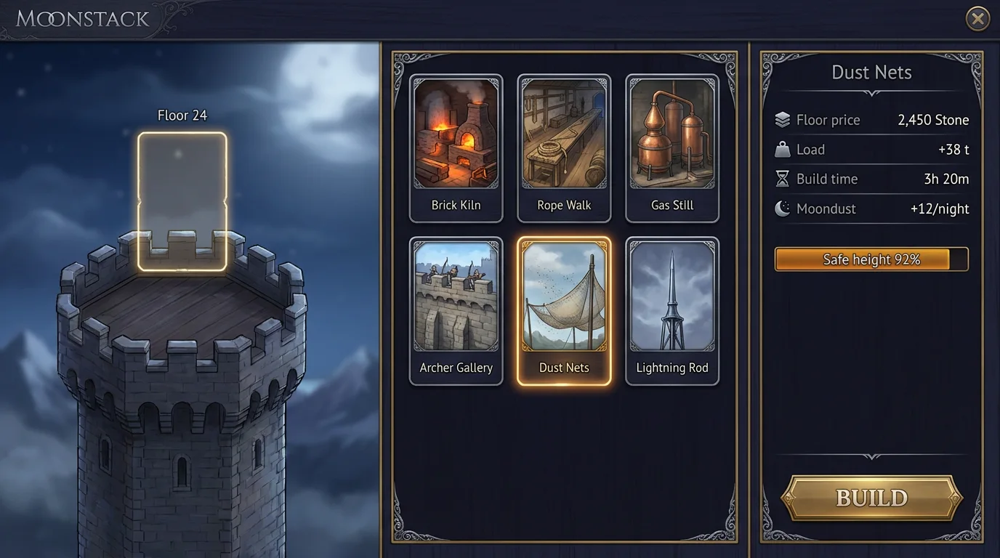
Statika: Leverage, Margin Call, Liquidation
Ovo je srce Moonstack-a. Temelj određuje bezbednu visinu: 24 m po nivou temelja. Do te linije kula je stabilna. Preko nje rasteš samo na skelama, odnosno na Leverage-u. Skele daju brži rast i viši prinos, ali svaki pogodak u kulu sa skelama troši integritet. Kad integritet padne na nulu, sve iznad bezbedne linije se ruši.
Leverage ×2 / ×3 / ×5
Nivo skela određuje koliko brže gradiš iznad linije (×1,5 / ×2 / ×3) i koliko preopterećenja kula trpi. Što je veći Leverage, to svaki pogodak više boli.
Margin Call
Kad ti ostanu 2 pogotka do Liquidation-a, stiže push obaveštenje i crveni baner. Imaš izbor: dodati Buttress, skinuti skele (gubiš spratove, ali ne robu) ili postaviti Stop-Loss mreže.
Liquidation
Sve iznad bezbedne linije pada. Pobednik dobija trofej Toppler i sezonske poene. Roba sa palih spratova postaje Tower Fall i pada po komšijama.
Stop-Loss nets
Svaka mreža spašava 15% robe sa palih spratova, najviše 60%. Mreže koštaju Rope i zauzimaju mesto na fasadi, pa imaš manje mesta za strelce.
Interaktivni mockup 1 · Presek kule sa skelama
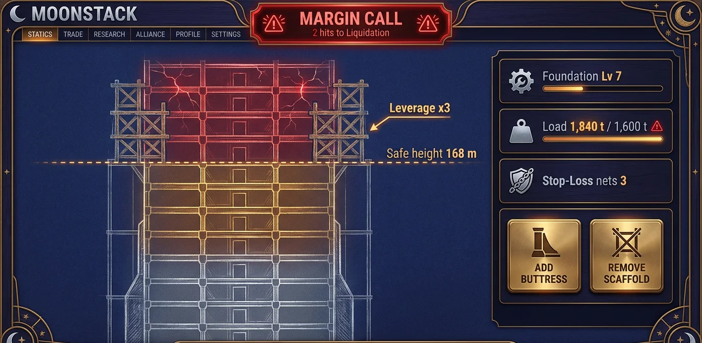
Zašto ovo radi
Kripto igrači znaju šta znači Liquidation, ali ga nikad nisu videli. Ovde ga vide: kula škripi, grede pucaju, gornjih devet spratova pada na komšije. Svi ostali razumeju Jenga-u. Rizik je izračunljiv i uvek vidljiv na ekranu, nikad skriven.
Sapperi malih igrača napadaju temelj. Svaki uspešan podkop spušta nivo temelja za 1, a time i bezbednu liniju za 24 m. Kula sa skelama može da padne a da joj niko ne dotakne vrh. To je najjače oružje malih protiv velikih.
Bez skela nema Liquidation-a. Pogoci samo prave pukotine koje se popravljaju. Igrač koji ne voli rizik može da raste sporo i sigurno. Igrač koji juri Mesec mora da rizikuje.
Mehanike po kojima se Moonstack pamti
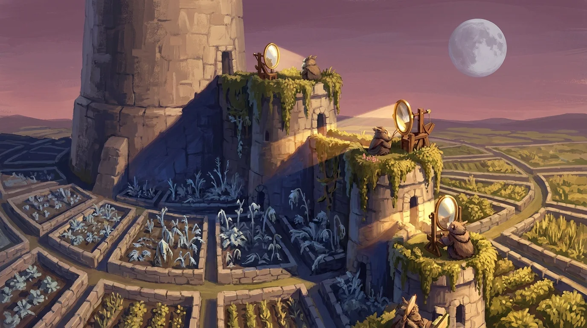
Skyline i senka
Svaka kula baca senku dužine h / tan(ugao Sunca). Senka tokom dana klizi od zapada ka istoku preko komšijskih parcela. Bašta u punoj senci raste 40% sporije. Visoka kula tako bukvalno uzima sunce malima.
Kontra: Brass Mirror vraća polovinu izgubljenog svetla na svoju parcelu. Ako ga uperiš u visoku kulu, njeni strelci dobijaju Glare (−15% preciznosti, 1 h).
Tower Fall
Kad kula padne zbog Liquidation-a, srušeni spratovi i 35% njihove robe padaju po susednim parcelama u krugu koji zavisi od visine pada. Ruševine leže 24 do 48 h. Svako može da pošalje Hauler-e, a prvi na polju nosi najviše. Vlasnik parcele na koju je palo automatski dobija 10%.
Pandan Whale Fall-u: pad velikog je praznik za ceo kraj.
Skybridges i Megaspire
Saveznici na susednim parcelama spajaju kule mostovima na sličnoj visini. Mostovi dele 25% preopterećenja (realno podižu bezbednu visinu), branioce i Airdrop-ove. Povezana grupa je jedna Megaspire na posebnoj rang listi.
Contagion: kad Crane Glider preseče most, deljeni teret nestaje u trenutku. Saveznici na skelama mogu da dobiju Margin Call u lancu.
Munje i Storm Jars
Oluja gađa najvišu kulu u kraju koja nema gromobran: najviši sprat gubi integritet i može da se zapali. Uz istraživanje Storm Jars munja se hvata u tegle. Tegle pune Arc Ballista-u ili duplo ubrzavaju ciglanu na 1 h.
Moon-Eater je uvek meta: gromobran upija samo 2 od 3 udara.
Gas fees
Svaki napad troši Gas srazmerno daljini i težini jedinica. Svaki kraj ima base fee koji raste 12,5% za svaki sat sa više od 10 napada i pada kad je mirno. Gužva je bukvalno skupa.
Taktika: napadni kad su svi umorni i gas jeftin.
Rug Pull
Sprat-zamka: pod propada pod napadačima i baca ih u šanac. Radi jednom, pa se pravi ponovo. Izviđači ga ne vide. Vidi ga samo Owl, ili bilo ko posle prvog propadanja.
Blef: sprat koji izgleda kao prazan trezor je najbolji mamac.
Floor Sweep
Napad koji cilja jedan sprat i čisti sve branioce sa njega. Taj sprat ostaje bez odbrane 2 h, pa koalicija može da pošalje glavni talas kroz otvorena vrata.
Koordinacija: jedan igrač čisti, drugi pljačka.
Airdrop
Baloni nose zalihe samo saveznicima povezanim mostom ili u istoj koaliciji duže od 7 dana, sa dnevnim limitom. Slobodnog slanja između igrača nema, da ne bi bilo pushing-a.
Bez prečica: trgovina ide samo kroz bazene na Bazaar-u.
ATH
Tvoja rekordna visina je trajni trofej. Ostaje na profilu kroz sve sezone, u Hall of Heights. Kula može da padne, ali ATH ne može.
Ponos: gubitak boli, ali ne briše istoriju.
Interaktivni mockup 2 · Senka preko kraja
Svetlo u baštama danas
Traka pokazuje koliko je sunca bašta izgubila tokom celog dana (6–19 h). Ironhare (182 m) najviše zaklanja komšije na istoku i zapadu.
Kripto žargon kao mehanika
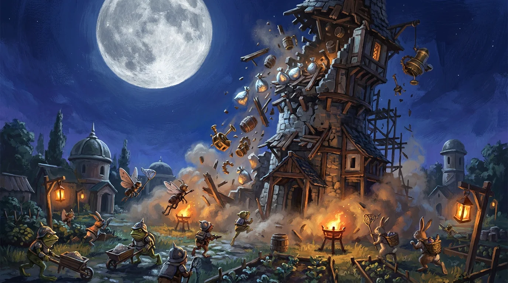
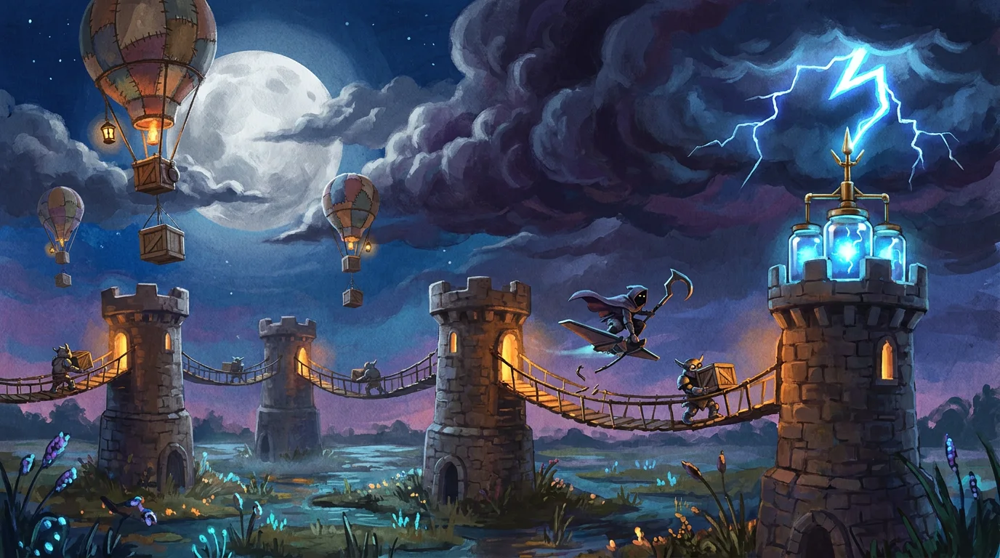
Jedinice, odbrana i udruženi napad
Borba ima tri pravca: ispod (podkop), spolja (zemlja i opsada) i odozgo (vazduh). Svaki pravac gađa drugi deo kule, pa je i odbrana raspoređena po visini.
| Jedinica | Pravac | Stvorenje i oprema | Uloga | Kontra |
|---|---|---|---|---|
| Sapper | Podkop | Moth i Toad sa lopatama i fenjerima | Spušta nivo temelja, a time i bezbednu visinu | Moat, Forest korenje |
| Ladder Crew | Zemlja | Hare sa merdevinama od bambusa | Penje se na donje spratove i pljačka | Archer Gallery, Rug Pull |
| Battering Ram | Zemlja | Toad posada pod kožnim krovom | Razbija kapiju i kontrafore | Buttress, šanac |
| Shieldwall | Zemlja | Wolf štitonoše u mesingu | Prima strele i štiti ostale | Catapult branioca |
| Catapult | Opsada | Hare i Toad posada | Ruši integritet spratova; tera kule na skelama ka Liquidation-u | Sky Lantern, protivnapad |
| Paper Kite | Vazduh | Crane sa oslikanim zmajem | Izviđanje; ne nosi plen | Catch Nets |
| Dust Balloon | Vazduh | Moth posada u platnenom balonu | Sleće na krov i krade prašinu | Catch Nets, strelci |
| Crane Glider | Vazduh | Crane na jedrilici sa kukom-sečivom | Seče mostove, Floor Sweep gornjih spratova | Strelci, Glare ogledala |
| Sky Lantern | Vazduh, noć | Zapaljivi papirni fenjer | Pali skele, mreže i Rope Walk | Water, Cistern |
| Hauler | Zemlja | Toad sa kolicima | Skuplja Tower Fall ruševine | — |
Odbrana kule
- Archer Gallery: domet raste sa visinom sprata.
- Catch Nets: hvataju balone, jedrilice i zmajeve.
- Moat: usporava sappere i merdevine.
- Rug Pull: jednokratna zamka koju izviđači ne vide.
- Buttress: dodaje nosivost i štiti od ovnova.
- Lightning Rod i Storm Jars: štite od munja i pune Arc Ballista-u.
- Brass Mirror: Glare na strelce visoke kule i svetlo za bašte.
- Diamond Hands: garnizon koji ne beži i bori se do kraja. Skup je i drži jedan sprat.
Lantern Strike: udruženi napad
Do 8 kula (Wolf vodi do 10) napada zajedno, sa dolaskom u prozoru od 60 sekundi. Svaki član sa titulom Moth, Toad ili Hare dodaje +4% napada celoj grupi, najviše +20%, kada je meta Wolf, Moon-Eater ili kula duplo viša od proseka napadača.
Meta vidi upozorenje „Lanterns gathering“ kad joj se približe 3 ili više napada. Owl vidi i sastav.
Lovci na velike: igrač koji zada poslednji udarac pri Liquidation-u dobija Toppler poene. Protiv Moon-Eater-a poeni su dupli.
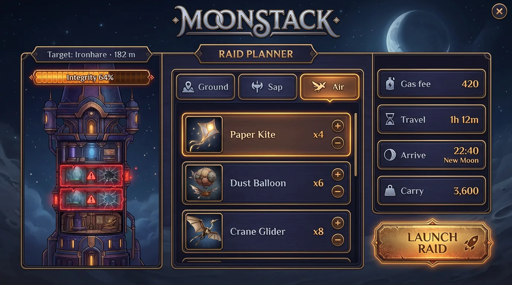
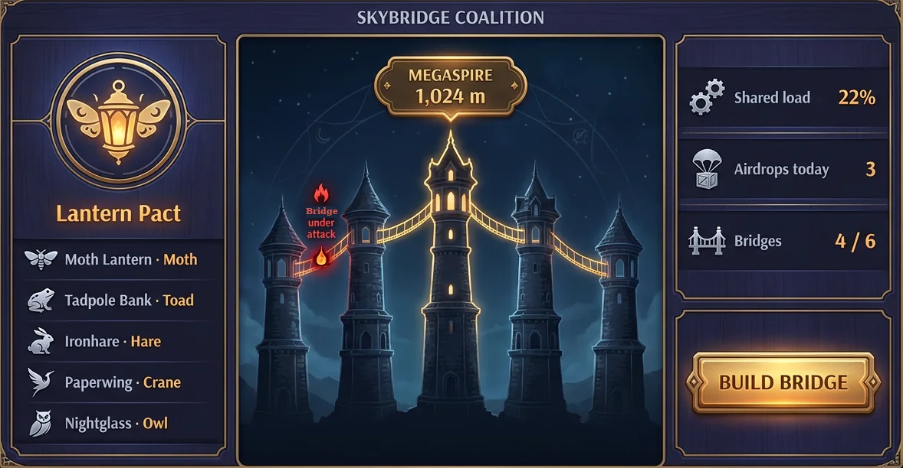
Ekrani igre
Šesnaest UI ekrana napravljenih u Runway-u: deset za desktop (16:9) i šest za telefon (9:16). Tekst na ekranima je proveren. Tri ekrana su ponovljena, a dve sitne greške u tekstu ručno ispravljene. Klikni na sliku za pun prikaz.
Desktop
Telefon
Sezone i zarada
Sezona traje 3 lunarna ciklusa, oko 89 dana, i završava se na Perigee Night. Novčana nagrada je primamljiva, ali dolazi isključivo iz udela prihoda: 30% prihoda sezone ide u nagradni fond.
Podela nagradnog fonda
Primer: sezona sa 300 ETH prihoda daje fond od 90 ETH.
Sezonski skor
- Moondust odnesen u Observatory: 1 poen po jedinici.
- Visina: 20 poena po metru ATH-a u sezoni.
- Borba: poeni za pobede, Floor Sweep i opljačkanu prašinu.
- Toppler: poeni za svaki srušen sprat, dupli protiv Moon-Eater-a.
- Lunar Landing: kula iznad Moonline-a u ponoć Perigee Night dobija +25% ukupnog skora i trofej.
Kategorije
Prva tri mesta po skoru. Giant Slayers po Toppler poenima. Best Coalition po visini Megaspire-a u ponoć Perigee Night. Weekly: 13 nedeljnih nagrada za najviše prašine, najviše srušenih spratova i najveći skok visine u nedelji.
| Izvor prihoda | Kako | Pravilo |
|---|---|---|
| NFT Mason-i | Mint i royalty na sekundarnom tržištu | Po uzoru na Feather & Iron: besplatan mint za vlasnike partnerske kolekcije (otvoreno pitanje), ostatak se prodaje. |
| Moon Bazaar | Mali fiksni ETH fee na svaku razmenu na našem DEX-u na Robinhood Chain-u | Bazeni Stone, Timber, Rope, Gas, Water i Bricks prema Moondust-u. Dnevni limit zavisi od zgrade. |
| Almanac Pass | Sezonska propusnica | Kozmetika, istorija bitaka, sačuvani rasporedi odbrane. Ništa ne ubrzava i ne jača. |
| Kozmetika | Fasade, boje fenjera, šare balona, zastave, trofeji | Samo izgled. Snaga se nikad ne prodaje. |
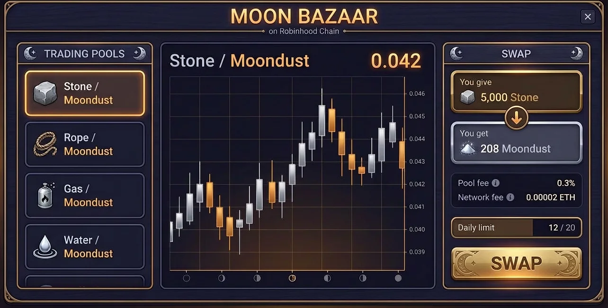
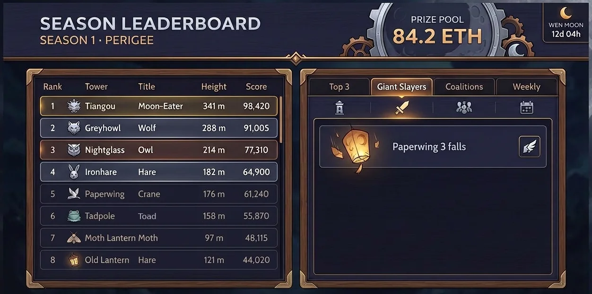
Bez NFT-a se igra besplatno: jedan unajmljeni zidar (25 Bricks dnevno), puna igra, posebna rang lista i kozmetički trofeji, ali bez ETH nagrada. Ko kasnije kupi NFT, prelazi na glavnu listu bez prenosa skora. Jedan novčanik je jedna kula. Airdrop-ovi zahtevaju 7 dana saveza i imaju dnevni limit. Trgovina ide samo kroz bazene. Pre lansiranja nagradnog fonda potrebna je pravna provera po tržištima.
Galerija koncepata
Key art, sedam portreta titula i tri scene ključnih mehanika. Paleta: indigo noć, sumrak, mesečevo srebro i toplo svetlo fenjera. Namerno je daleko od tirkiznih dubina Brinehold-a.
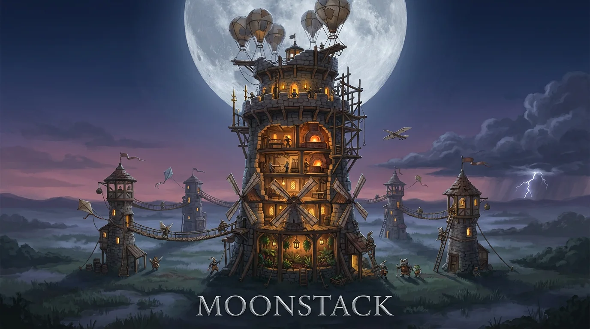
Plan razvoja
| Faza | Šta | Gotovo kad |
|---|---|---|
| 1 · Prototip (6 nedelja) | Presek kule, gradnja, statika sa skelama, Margin Call, Liquidation, Tower Fall u jednom kraju; ubrzan Mesec (1 ciklus = 3 dana) | Testeri namerno rizikuju skele i pričaju o rušenju |
| 2 · Zatvoreni test | Senke, mostovi, munje, koalicije, telefon sa obaveštenjima, 300 igrača | Zadržavanje D7 iznad 25%, a sesije 5 do 10 minuta |
| 3 · Sezona 0 | Pun Mesec, 3 ciklusa, Free Climber, Moon Bazaar na testnoj mreži, bez novčanih nagrada | Ekonomija drži 89 dana, bar 20% igrača dotakne Moonline |
| 4 · Lansiranje | NFT mint, nagradni fond, aplikacije za telefon, prva prava sezona sa finalom na supermesec | Pravna provera završena, žig registrovan |
Ključni rizici
- Pravni: plaćen ulaz plus novčane nagrade. Ublaženo besplatnim ulazom, igrom zasnovanom na veštini i proverom po tržištu.
- Kitovi koji gaze: ublaženo floor price-om, vidljivošću, munjama, sapperima i Contagion-om.
- Frustracija od rušenja: ATH ostaje, a Stop-Loss, HODL Vault i 72 h zaštite za nove kule (Scaffold Shield) ublažavaju gubitak.
- Više naloga: jedan novčanik je jedna kula, bez slobodnog slanja, Airdrop tek posle 7 dana.
- Složenost na telefonu: statika uvek u jednom broju („2 hits to Liquidation“).
Šta je najjače
Leverage kao statika. Finansijski rizik koji svako razume kao kulu koja škripi. Margin Call stiže kao push obaveštenje, a Liquidation se vidi sa cele mape i pada po komšijama.
Pravi Mesec kao sat igre. Svaki pun mesec na nebu je podsetnik za igru, besplatno i svuda u svetu.
Senka kao politika. Visina nije samo broj na listi. Ona uzima sunce susedima i daje im razlog da te sruše.
Predlažem da prototip krene od statike: presek kule, skele i jedan katapult. Ako je zabavno gledati kako tuđa kula pada i trčati po ruševine, sve ostalo se gradi na tome. Kad se napravi GitHub repo, postaviću ovaj wiki i prototip tamo.